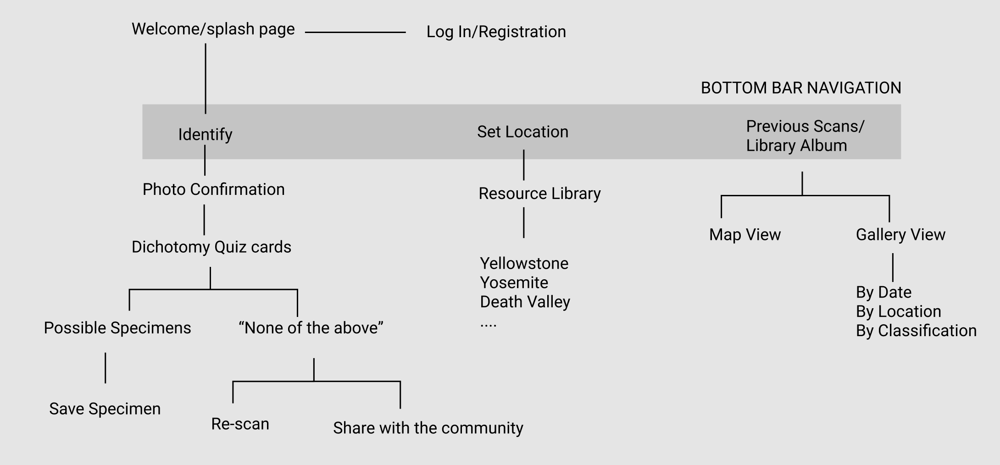
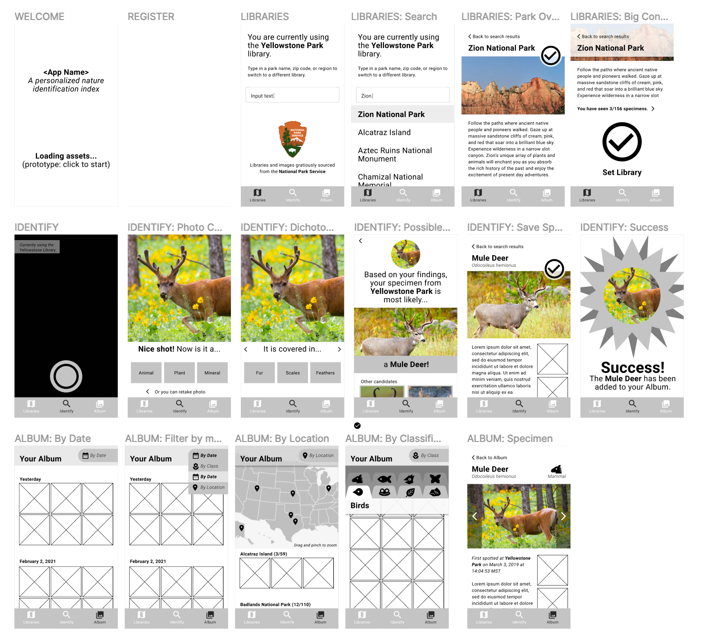
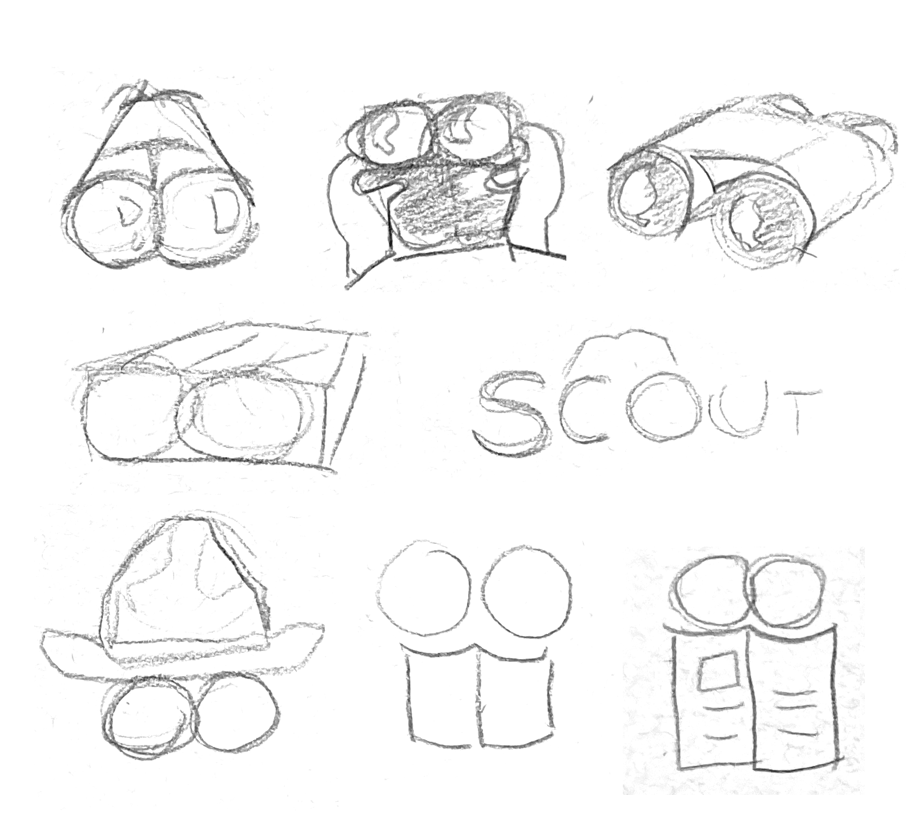
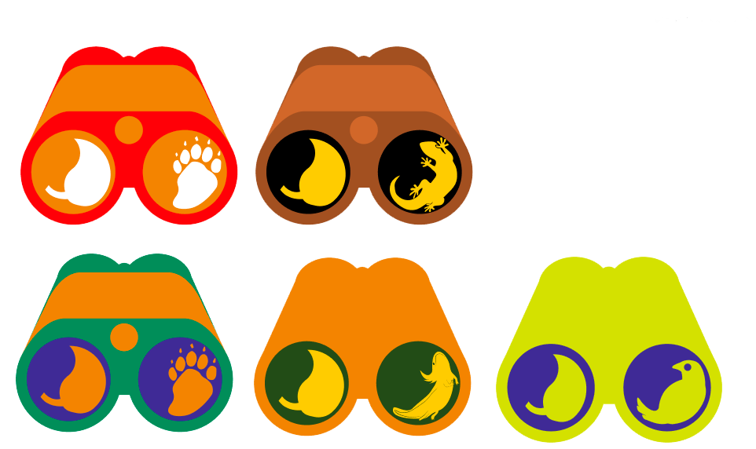

Scout

Scout is a mobile application designed to accompany you in national parks and provide you the tools to identify specimens as you explore!
As a nature enthusiast who has lived near woods and parks her entire life, I found the inspiration for this project when I visited Yellowstone National Park with my family. I loved spotting all the animals and flowers I saw, but felt hopeless when someone would ask, “Okay so, what is that?”
Design problemHow can I make deeper experiences while exploring the wilderness? I have a desire to learn more about the wildlife I see, but no means to surf the internet when I am in an area without service.
Design Criteria- Enrich hiking experience without sacrificing quality “screen-free” time
- Simple, clean and straightforward while affording delightful learning moments
- Honoring the services of National Park resources
- Potential for memory banking
My responsibilites for this project include: design and branding guidelines, user resarch, lo-fi and hi-fi prototyping, and conceptualizing.
Research


To assess interest in Scout and understand current pain points, I interviewed hikers of various levels. The personas above illustrate the three general categories of users I could see benefiting from Scout: the Escapist, the Survivor, and the Nature Lover.
Lo-Fi Models


A sitemap and wireframes represent the user flow for Scout. I wanted the experience to be reminiscent of dichotomous field guides and the Pokédex from the Pokémon franchise. A dichotomous key makes identifying a specimen more approachable and interactive as it is broken down into a series of simple questions. The Pokédex indexing aspect would satisfy users who seek to collect memories of the specimens they’ve encountered and making the app engaging.
Branding




I derived a color story pulled from swatches seen in nature resources such as National Geographic, Discovery, and other park guides. I was drawn to typefaces and imagery that felt native to existing hiking products and branding. I chose a pair of binoculars as a mascot because it is represents exploration and adjusting a bionculars’ focus emulates the wayfinding process.
Hi-Fi Model
To develop a high fidelity prototype, I utilized Figma for the flow and Adobe Illustrator for iconography and graphics.
Identifying specimens
After opening the app, Scout defaults to the identification tab Scout. Upon snapping a photo of their specimen, the user will answer a series of question cards to determine what the specimen is.Accessing databases
In order to narrow possibilities, the user will need to select the appropriate database based on their location in the Library tab.A walk down memory lane
Living in the moment is the goal, but Scout wants users to be able to look back on the specimens they’ve seen in their Album. Organizational filters allow for quick access for impromptu storytelling.High-level achievements
Statistics in the My Ranger tab gratify and inspire the user to countinue scouting and learning about more specimens.Takeaways
Moving forward, I plan to launch a version of Scout at a small scale with local parks with a team of engineers. I found it rewarding and insightful to interview users that range from casual, easy-going hikers to those who make it their weekly activity and enjoy the outdoor splendor. In order to measure the success in my design criteria, I want to observe how streamlined the app serves in real time.